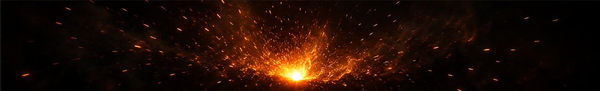
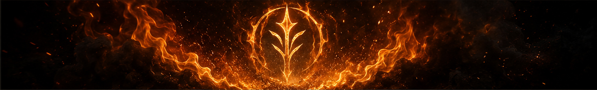
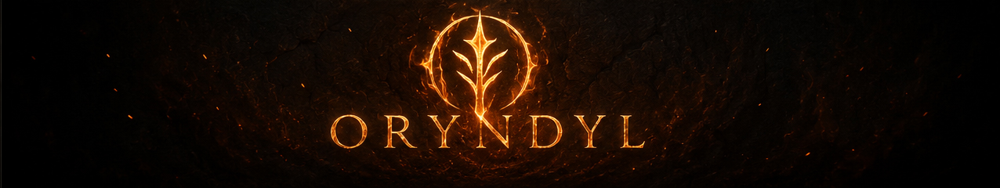

1. 0:00 - 1:50
Black Void
Silence. Nothing.
Awaiting.
2. 1:50 - 3:50
Ember Arrives
A single ember drifts into the void.
Faint. Alive.
3. 3:50 - 5:50
Sparks & Ignition
The ember flares.
Sparks scatter.
Energy builds.

4. 5:50 - 8:00
Flame Reveals
Flames arc and swirl, carving the symbol from the dark.

5. 8:00 - 10:00
Oryndyl
The logo stands forged in fire.
The flame subsides.
The mark remains.
